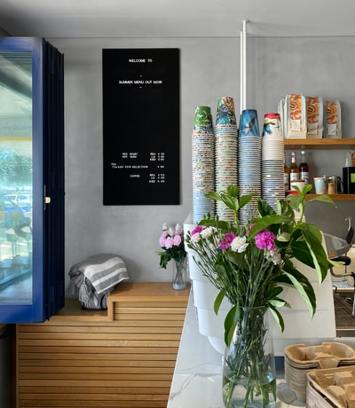

NEWS
体に優しい自然食を提供する、Sato Coffee。無添加の食材を利用したメニューが特徴です。おいしいブレンドコーヒーとヘルシーなオーガニックフードで体内から癒されてください。 体に優しい自然食を提供する、Sato Coffee。無添加の食材を利用したメニューが特徴です。おいしいブレンドコーヒーとヘルシーなオーガニックフードで体内から癒されてください。
体に優しい自然食を提供する、Sato Coffee。無添加の食材を利用したメニューが特徴です。おいしいブレンドコーヒーとヘルシーなオーガニックフードで体内から癒されてください。
体に優しい自然食を提供する、Sato Coffee。無添加の食材を利用したメニューが特徴です。おいしいブレンドコーヒーとヘルシーなオーガニックフードで体内から癒されてください。
カテゴリー
お店の紹介
期間限定メニュー
イベント
このお店について
体に優しい自然食を提供する、Sato Coffee。無添加の食材を利用したメニューが特徴です。おいしいブレンドコーヒーとヘルシーなオーガニックフードで体内から癒されてください。